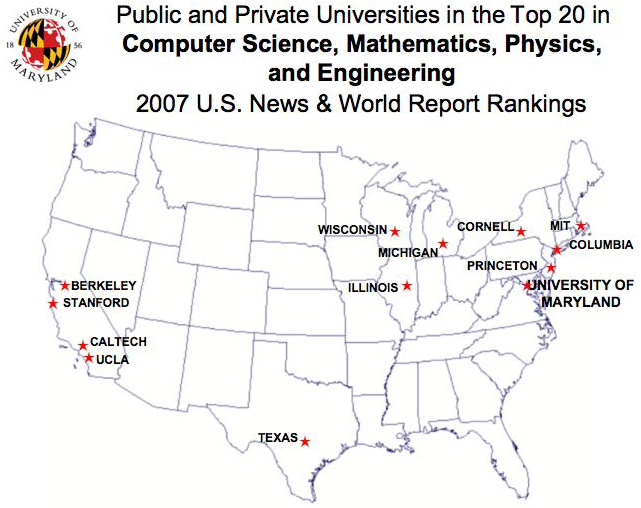

My Search Engine
Dictionary
Mathworld
Math (Htm-Latex) online
Los Alamos Nat. Lab. Archiv
Mathematics Genealogy
Los Alamos Nat. Lab. Center for Nonlinear Studies
Nonstandard form and its applications in Computer Science and Electrical Engineering
Wavelet resources
V.Wicherhauser's work on wavelet
M.Taylor's PDE and Harmonic Analysis
Penn State Math Server
Citation Server
(ISI Web of Science)
Wavelets, Frames and Discretization
Introduction courses to Harmonic Analysis and PDE
Spherical functions on symmetric cones
Geometry and Spectral Analysis
Adaptive Wavelet Packet Image Compression
Digital Revolution (II) - Compression Codes and Technologies; Introduction
Harmonic analysis in Finance
American Mathematical Society
The International Mathematical Union (IMU)
The Intern. Confer. Math. (ICM 2002), Harmonic Analysis---Hangzhou
The World of Mathematics Universities in USA College Rankings
Computer Science, Mathematics and Physics
National Ranking --- University of Maryland
